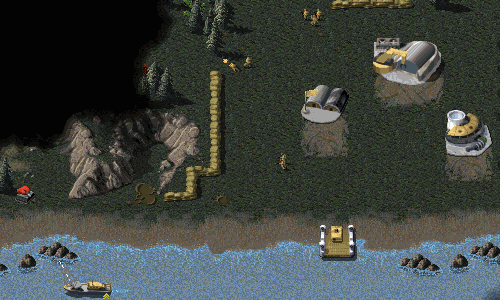
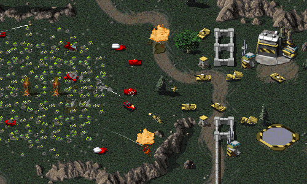
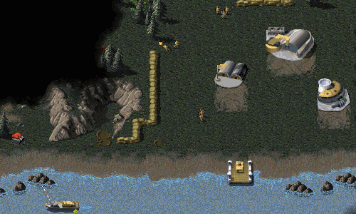
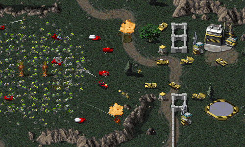


 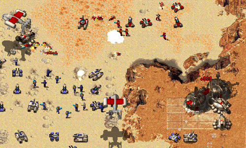
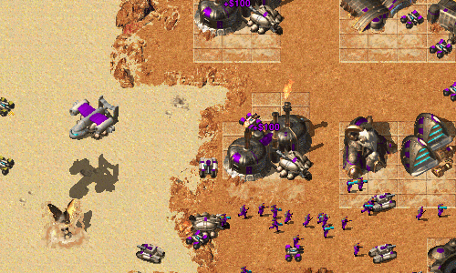
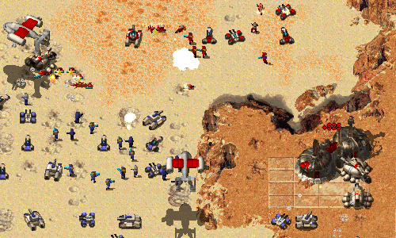
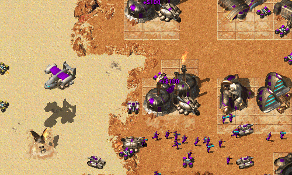
 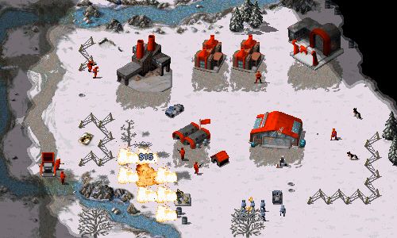
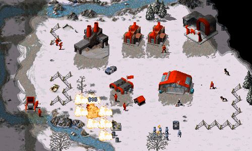
 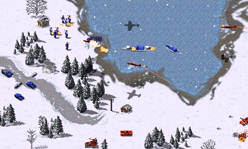
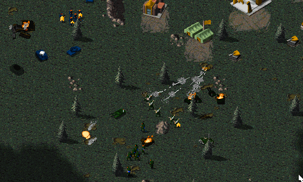
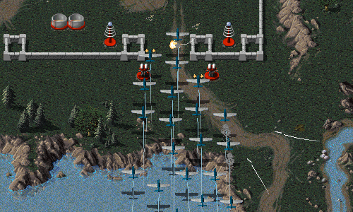
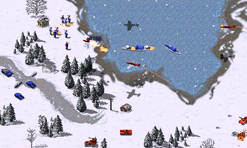
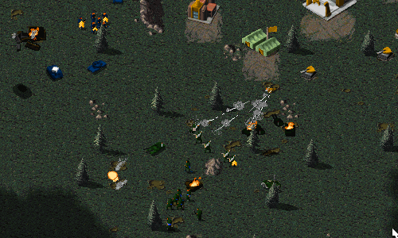
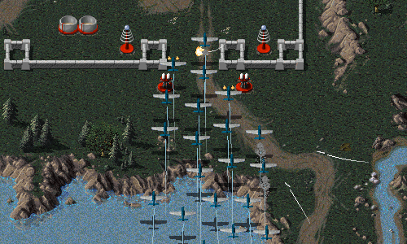
Classic strategy games, rebuilt for the modern era.
Open Source. Free. For all modern operating systems.
Find us on social media:


Latest News
Playtest 20160904
Posted by Paul Chote at 2016-09-04 19:00 +0100
Today we’re happy to finally announce the first release candidate for our next OpenRA release. The new playtest contains over 1200 commits by 38 authors (including 11 first-time committers, thanks to all of you!).
We rely on players to thoroughly test the playtest builds to catch any bugs or balance regressions before the final release, so head over to the download page to try it out today! If you encounter a bug, or have any feedback, then please create a ticket on our Github issue tracker, find us on IRC, create a topic on our community forum, or leave a message in the comments below.
A lot of work in this release has focused on improving our core engine technology and paying down technical debt. The first place you will notice this is the mod chooser, which now understands the various install disks and digitial distributions of the original games. It can now automatically find and install all of the assets used by the mods, including the full motion videos and the additional music tracks included with the expansion disks.

Because we have changed which assets are copied, all players will need to reinstall (or redownload) the assets for this playtest. These will be used for the future playtests and releases, so only needs to be done once.
The new FMV installation support has arrived just in time (some would argue far too late!), because this playtest includes 7 more campaign missions for TD and one new campaign mission each for RA and D2K. RA also includes three custom multiplayer missions that can be selected from the mission chooser (for singleplayer) or the multiplayer lobby (for cooperative play).
Other notable changes in this release include:
- Improvements to unit pathfinding behaviour (less traffic jams around bridges and choke points!)
- Aircraft in RA will now intelligently manage their reloading behaviour at airfields or helipads
- New hotkeys and mouse bindings for moving around the map and producing units
- Lobby options (such as crates and shroud) are no longer reset when switching maps
- Improved UPnP support for automatically opening ports when hosting local servers
- Fixes for a collection of common crashes that sneaked in to the last release (we’re sorry about that!)
- A collection of balance changes for RA and TD that were discussed and tested on our community forum
- Many trait and Lua API improvements for mods and maps

Watch your back! We have taught the AI to use Engineers to capture tech buildings and enemy structures.
A controversial exploit allowing engineers to cancel production in the RA mod has also been fixed.

A new scoring system tracks many ingame actions, not just kills.
The redesigned score menu now also lists the spectators that are observing the match.

We have restored the ability for flame weapons to burn trees down to charred husks.
Try the playtest today to find all the other cosmetic improvements!
Check out the full changelog for more details, and head over to the download page to try it for yourself!
Please note that OpenRA now requires .NET 4.5 / Mono 3.2 or greater. Players using Ubuntu 12.04 or other Linux disributions that include Mono 2.10 can upgrade to a supported version by following the instructions on the Mono site. Players who are still on Windows XP will need to upgrade to a supported OS.
Work is steadily progressing on our official Tiberian Sun mod and the “gen2” engine overhaul required to support it and other community-developed mods.

During this last release cycle we completed the first step (a year in the making) of a major project to support the per-pixel depth calculations required to correctly render the TS world. Gameplay advancements include finishing support for the EMP cannon and player-controllable Carryalls.
A lot of work remains on both the engine and gameplay fronts. Please understand that this is a long-term project, and it will not be completed any time soon with our current developer manpower. We have plans for making future development versions more accessible for testing, but because the project is developed by volunteers in their free time we cannot predict when it will be complete enough to include in an official OpenRA release.